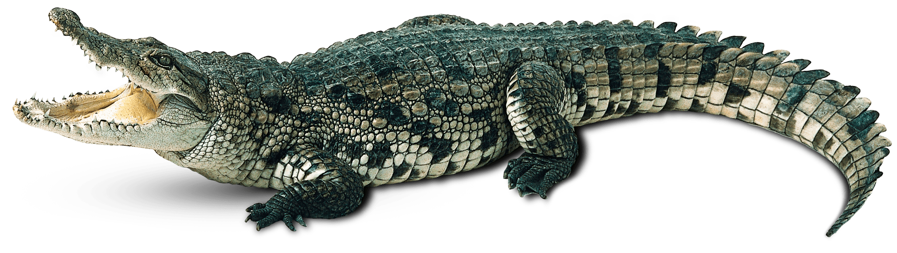
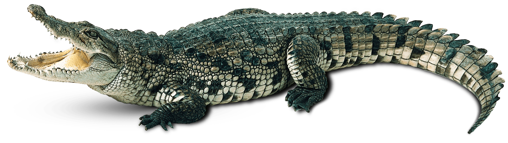

دلفيين
يُعدّ الدلفين أحد أنواع الحيتان ذات الأسنان الصغيرة، ويوجد ما يزيد عن 40 نوعاً مختلفاً من الدلافين، وهناك 6 أنواع منها يُمكن تسميتها بالحيتان ومنها الحيتان القاتلة أو حيتان الطيّار فالدلافين ليست أسماكاً على الرغم من أنّها تعيش أغلب الوقت في المياة إذ إنّها تُعتبر من أصناف الثدييات المحيطية وتُقسم هذه الفئة إلى عائلتين رئيسيتين، وهما كما يأتي

 
